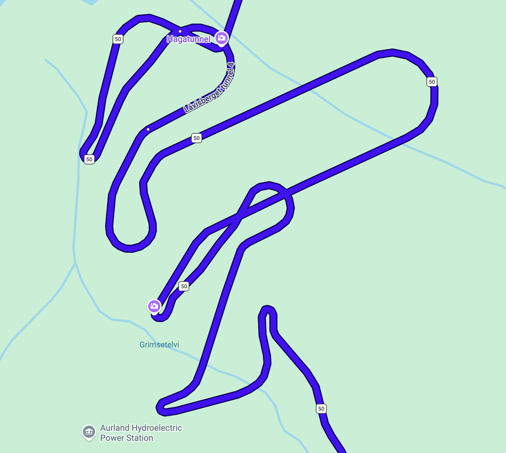

Ez az oldal
Na végre egy doksi amit nem követ szavazás, gondolhatjátok. Ezt az oldalt azért gondoltam hogy meg legyen minden egy helyen, egyszerűen elérhető helyen, bárki számára. Szóval ha felmerül a kérdés, ohh hogy is volt X meg Y, akkor egy klikkel minden elérhető, bárhonnan bárkinek.
Tudnivalók
Hasznos dolgok utazás előtt
Ami biztosan kell
- Személyi, értelemszerűen
- Egy embernél jogsi legalább
- Azért relatíve meleg valami réteg, megha mondjuk túrázásnál melegünk is van csak kiülni meg ilyesmi.
- Vízálló dzseki/kabát/kutyafasza, értelemszerűen
- Jó cipő, túracipő, de masszívabb nem teljesen lapostalpú cipő is megteszi ha valaki nem akar csak azért venni cipőt. Legyen vízálló
- Először javasoltnak akartam írni, de faszt meggondoltam magam: vízálló nadrág is, sajnos nem tudjuk az időjárást kiszámítani, ha esik ott esik, az pillanatok alatt kegyetlen vizes leszel. Nem kell túlgondolni, egy ilyen tökéletes megfelel a célnak, és akkor lehet kényelmesen túrára öltözni de mégis védve maradni.
- Fürdőgatya, mindenképp hisz szaunázunk is.
- Nézzétek az időjárást, a magasabb túraspotokon lehet azért elég hűvös.
Ami biztosan nem kell
- Útlevél, személyi elég a be/ki utazáshoz (Dancs értelemszerűen kivétel)
- Törülköző, ebből van anyuéknál rengeteg tudok hozni eleget lesz mindenkinek. Főleg a wizzairrel érkezőknek költsétek másra az értékes kis helyet
- Tusfürdő, fogkrém, etc: ezt is tudunk mind kérni, amúgy se lehet repülőre vinni, szóval ezen se aggódjatok. Ha bármi kérdéses ilyen kell-e kérdezz
- Papucs úgy néz ki megoldható szintén
- Norvég korona. Szinte mindenhol van kártya, ha esetleg valahol nincs is mert ilyen becsületkasszás wc ilyesmi, 99,9%-ban van Vipps ami ilyen cashapp szerű cuccuk, szólok anyunak és nekik van. Valamint ha mégis kéne apró vagy tényeleges kp, kérek előtte szintén hogy legyen nálunk valamennyi, de valószínűtlen. Ne baszakódjatok váltással, én se teszem.
Haditerv
Szombat
Røldal Accommodation → Gaustatoppen
Note: Itt be kell majd vásárolnunk úgy hogy másnap útra is legyen, mert másnap nem lesznek nyitva a boltok. Sőt, mivel reggel korán megyünk biciklizni, én azt mondom jobban át kell gondolnunk, és bevásárolni a biciklitúrára is.
Szabad program:
Foglalható program:
- Gaustabanen - Van helyszíni jegypénztárjuk is szóval ezt szerintem majd ott kitaláljuk hogy le/fel/mindkettő/egyiksem hogy szeretnénk vele menni, ezt felesleges előre foglalni
- Shuffleboard - Ez elég nagyot megy úgyhogy akár ki is próbálhatjuk, de kétlem hogy akkora tolongás lenne rá hogy elfogyjanak a pályák
Lefoglalt dolgok
- Kvitåvatn Fjellstue
- Floating sauna - Ezt egy órára foglaltam csak, mert tényleg konkrétan egy szauna a végében a mólónak meg a tó. Gondolkodtam a két órán, mert egyébként árban szerintem nem vészes, nem tudom hogy ha a két opció a szauna vagy a 10 fokos víz akkor abból le tudunk-e nyomni 2 órát. Elvileg az órára utána szabad volt ha esetleg a 2t megszavazzuk.
Vasárnap
Gausta → Flåm
Szabad program:
- Stegastein - Ez megközelíthető kocsival, van parkoló mellette
- Mount Prest hike - Ez viszont hike
- World's longest tunnel - ezen alapvetően nem mennénk át, de a bejáratánál elmegyünk
- Ægir brewery - Vannak söreik, meg híres "Viking" menüjük. Valószínűleg az vagyonba, viszont csak söröket kóstolni megoldható. (Van ciderük is)
- Sajnos nem opcionális:

Foglalható program:
- Shuttle bus - Shuttle Flåm városba a szállástól, ezt én szívesen fogadnám, mert ugyanannyi idő mint kocsival, viszont a fent említett brewery az nagyon jó, pár söritalát szívesen elfogyasztanék. Most fél óra múlvára meg tudtam volna 6 jegyet venni, úgyhogy valószínűleg nem sürgős aznap is tudunk dönteni.
- Flåm safari - 1,5-as hajós túra a közeli fjordokon, megnézni vízeséseket meg olyan dolgokat amik csak a vízről láthatóak.
Kedd
Voss → Frøyset
Szabad program:
- Időtől függően a túra Øyvinddel
Foglalható program:
-
Szerda
Szerda logisztikája: A kisbusz mellett valaki vezet egy kocsit amit kölcsönbe kapunk/kapok aznapra, így a visszaadás után nekem van kocsim. Így senkinek nem kell otthonról pluszba eljönnie.
Frøyset → BGO
Szabad program:
Foglalható program:
-
Lefoglalt dolgok:
-